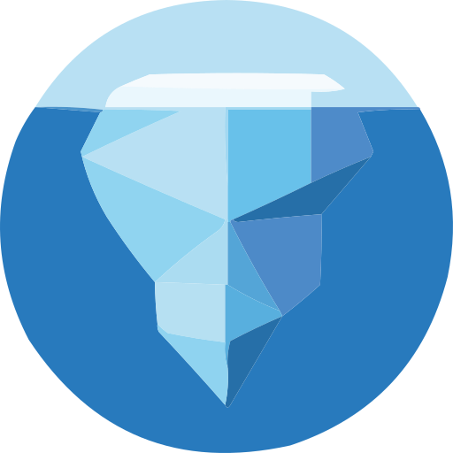
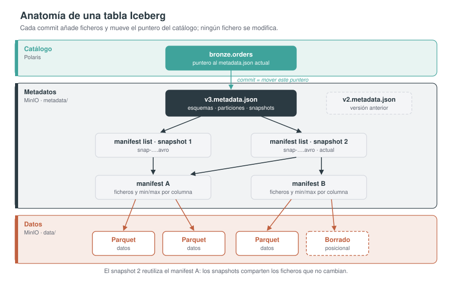
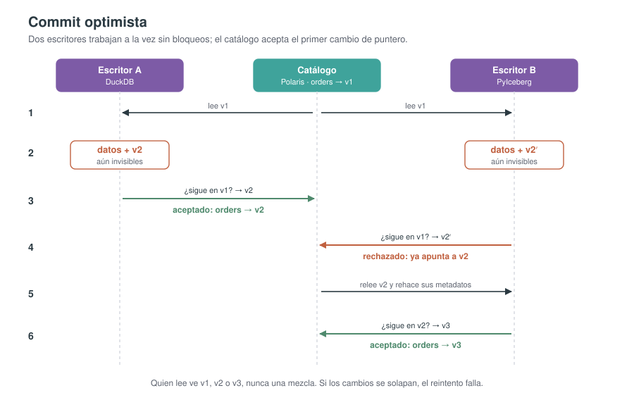
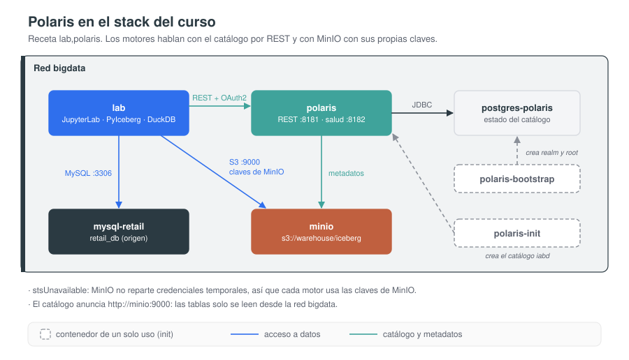
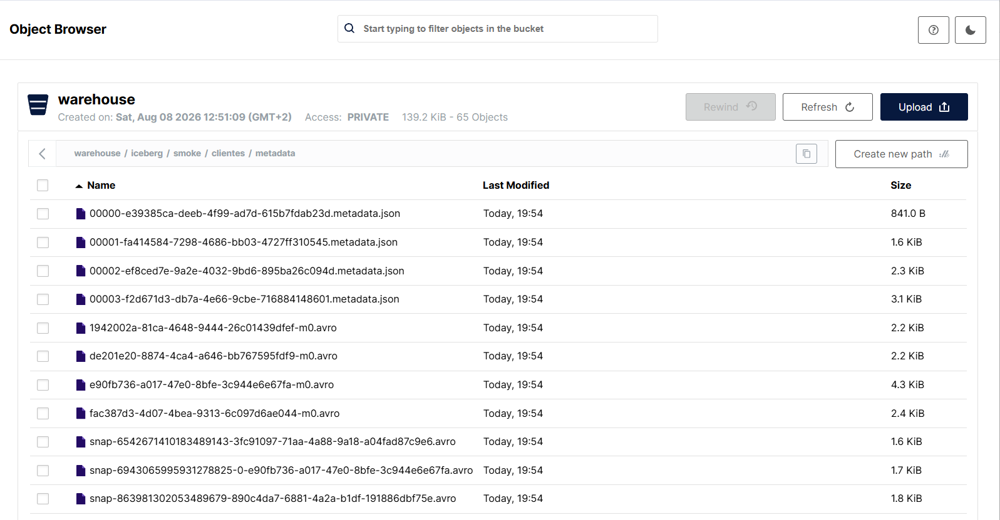
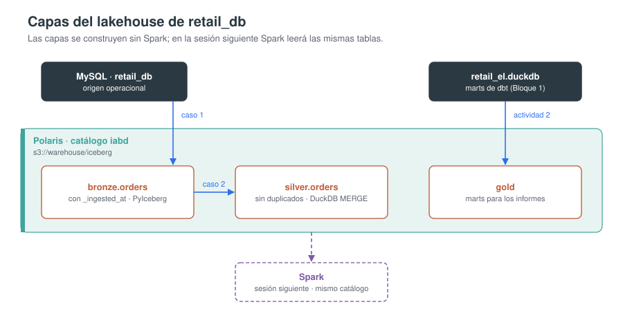

Changelog:
- Nueva creación — Noviembre 2026
Lakehouse con Iceberg¶
En el bloque anterior cerramos el ciclo ELT de retail_db: dlt copiaba las tablas de MySQL a DuckDB, dbt construía la estrella y Airflow lo orquestaba todo. La última tarea del DAG retail_elt, publicar, dejaba los marts como ficheros Parquet en s3://processed/marts/, listos para que el informe los leyera.
Ese último paso funciona, pero tiene trampa. Un lago de ficheros Parquet sueltos no sabe qué ficheros forman una tabla, no guarda historia y no protege a quien lee de quien escribe. En esta sesión, la primera del bloque, vamos a convertir ese lago en un lakehouse: tablas con transacciones, historia y evolución, sobre el mismo almacenamiento de objetos y sin cambiar de formato de fichero. Lo haremos con Apache Iceberg, el formato de tabla abierto de referencia, y con Apache Polaris como catálogo.
Y lo haremos sin Spark. Usaremos herramientas que ya conocemos, DuckDB y Python, para dejar claro que el formato no depende del motor. En la sesión siguiente, Spark llegará como un motor más que lee y escribe exactamente las mismas tablas.
Del data swamp a los formatos de tabla¶
Durante la era Hadoop, una tabla era una carpeta. Hive guardaba en su metastore el esquema y la lista de particiones, y cada partición era una subcarpeta (year=2026/month=11/). Para saber qué ficheros formaban la tabla, el motor listaba el almacenamiento.
Con unos pocos ficheros, esto funciona. Cuando el lago crece y varios procesos escriben a la vez, aparecen los problemas que convirtieron muchos data lakes en data swamps: había muchos datos, pero era difícil consultarlos, gobernarlos y fiarse de ellos. Volvamos a nuestra tarea publicar y hagámonos cinco preguntas:
| Pregunta | Con ficheros Parquet sueltos | Con un formato de tabla |
|---|---|---|
Si el informe lee mientras publicar escribe, ¿qué ve? |
Puede ver la mitad de los ficheros nuevos | El estado anterior o el nuevo, nunca una mezcla |
| Si hoy publicamos un mart erróneo, ¿cómo recuperamos el de ayer? | Con una copia de seguridad, si la hicimos | Leyendo o restaurando la versión anterior |
| Si dos procesos publican a la vez, ¿cuál gana? | El último en escribir, y sin avisar | Uno confirma; el otro detecta el conflicto y reintenta |
| Si un pedido cambia de estado, ¿hay que reescribir el fichero? | Sí, entero y a mano | Se actualiza la fila; el formato decide cómo |
| Si añadimos una columna o cambiamos el particionado, ¿se rompen los lectores? | Probablemente | No, y los ficheros antiguos no se tocan |
A esto se suma el rendimiento. En un almacenamiento de objetos como MinIO o S3, listar carpetas es lento y cuesta dinero, y Hive solo podía descartar ficheros tarde, durante la ejecución de la consulta.
Formato de tabla¶

Un formato de tabla abierto añade una capa de metadatos sobre los ficheros de datos. Esos metadatos enumeran exactamente qué ficheros forman cada versión de la tabla, con su esquema, su particionado y estadísticas de cada fichero. Los datos siguen en Parquet: lo que cambia es cómo se describe la tabla.
Alex Merced lo explica con una cocina llena de cajones. Para encontrar una cuchara podemos abrirlos todos, o mirar el tablón de la pared que dice dónde está cada cosa. Los metadatos son ese tablón. Gracias a ellos, el motor decide qué ficheros leer al planificar la consulta, con las estadísticas de los metadatos, y no al ejecutarla, listando carpetas y abriendo ficheros.
En el mercado existen varias soluciones de formato de tabla abierto, como son Apache Iceberg, Delta Lake o Apahe Hudi. Los tres resuelven los mismos problemas, pero con filosofías distintas. En este bloque elegimos Iceberg porque es el que permite que varios motores compartan un mismo catálogo, y eso es justo lo que vamos a hacer. Más adelante compararemos estas tres soluciones y veremos por qué Iceberg es la que mejor encaja con nuestro stack.
Iceberg no sustituye a Parquet
Parquet es un formato de fichero: define cómo se guardan las filas dentro de un fichero. Iceberg es un formato de tabla: define qué ficheros forman una tabla y cómo evoluciona. Una tabla Iceberg son ficheros Parquet más sus metadatos.
Iceberg nació en Netflix para resolver los límites de Hive con tablas enormes y es un proyecto principal de la Apache Software Foundation. No pertenece a ningún fabricante, y por eso lo leen y escriben Spark, Flink, Trino, DuckDB, Snowflake, BigQuery o Python.
Las cinco capas del lakehouse¶
Un lakehouse sobre Iceberg es modular: cada capa se puede cambiar sin tocar las demás. Nos servirá de mapa para todo el bloque.
| Capa | Qué hace | En nuestro stack |
|---|---|---|
| Almacenamiento | Guarda los ficheros de datos y de metadatos | MinIO |
| Ingesta | Escribe en las tablas, por lotes o en streaming | dlt, PyIceberg y DuckDB; más adelante, Spark y Kafka |
| Catálogo | Registra las tablas y coordina los cambios | Polaris |
| Federación | Modela y consulta datos de varias fuentes | DuckDB y Trino |
| Consumo | Informes, cuadros de mando, IA | El informe de Airflow, cuadernos Jupyter |
En esta sesión trabajaremos sobre todo en las tres primeras.
Anatomía de una tabla Iceberg¶
Una tabla Iceberg se organiza como un árbol de metadatos que termina en los ficheros de datos:

- El catálogo guarda, para cada tabla, un puntero al fichero
metadata.jsonactual. Es la única pieza que no vive en el almacenamiento. - El fichero
metadata.jsondescribe la tabla: sus esquemas, sus especificaciones de partición, la lista de snapshots y cuál es el actual. Cada cambio crea unmetadata.jsonnuevo; los anteriores no se modifican. - Cada snapshot apunta a una manifest list (
snap-*.avro), que enumera los manifests de esa versión con el rango de valores de partición que cubre cada uno. - Cada manifest (
*.avro) enumera ficheros de datos o de borrado, con estadísticas por columna: número de filas, nulos, mínimo y máximo. - Los ficheros de datos son Parquet. Los ficheros de borrado indican qué filas ya no forman parte de la tabla.
Así, una consulta con un filtro sobre order_date se resuelve en dos podas: con la manifest list descarta los manifests cuyas particiones no encajan, y con los manifests descarta los ficheros cuyo mínimo y máximo quedan fuera del filtro. Solo lee los ficheros que pueden contener resultados.
Nada se modifica, todo se añade
Ningún fichero de una tabla Iceberg se modifica nunca. Escribir es añadir ficheros nuevos (datos y metadatos) y mover un puntero. Esta idea explica casi todas las garantías que vamos a ver.
Características de Iceberg¶
Las garantías de Iceberg se derivan de su diseño basado en la idea de que nada se modifica, todo se añade. Esto permite garantizar la integridad de los datos y la consistencia en un entorno distribuido.
La primera característica es la atomicidad: cada escritura es un commit que cambia el puntero del catálogo a un nuevo metadata.json. Si hay conflicto, el commit falla y se vuelve a intentar. Esto asegura que los lectores ven siempre un estado consistente de la tabla.

Respecto a la concurrencia, se realiza un control optimista sin bloqueos. Se confía en que no habrá conflicto y se comprueba al final. El cambio de puntero es atómico, así que quien lee ve el estado anterior o el nuevo, nunca una mezcla. Por eso hablamos de transacciones ACID. Dos procesos que añaden datos a particiones distintas no entran en conflicto; dos que sobrescriben los mismos datos, sí.
Una de las características más novedosas es la posibilidad de viajar en el tiempo (time travel). Cada commit crea un snapshot (una versión completa de la tabla), y los snapshots anteriores siguen en el almacenamiento, en concreto, en metadata.json. Esto permite leer la tabla tal como estaba en un instante anterior, o volver a un snapshot anterior (rollback). Además, Iceberg permite ponerle nombre a un snapshot con un tag (carga_inicial, cierre_noviembre) o crear una rama (branch) que evoluciona por separado.
Conviene aclarar que un snapshot no es una copia de la tabla: los snapshots comparten los ficheros que no han cambiado, sabiendo que el uso de snapshots puede provocar un aumento en el uso de almacenamiento, ya que mientras exista un snapshot, sus ficheros no se pueden borrar, y un tag impide que su snapshot caduque.
Respecto a la evolución del esquema, Iceberg identifica cada columna por un identificador interno, no por su nombre ni por su posición. De esta manera, añadir, renombrar, reordenar o borrar columnas solo cambia los metadatos, sin necesidad de reescribir ningún fichero. Las filas antiguas devuelven NULL en una columna nueva, y un snapshot anterior conserva el esquema que tenía.
Particionado oculto y evolución del particionado¶
En Hive, particionar por mes obligaba a crear una columna mes, a rellenarla al escribir y a filtrar por ella al leer: si alguien filtraba por la fecha y no por mes, se leía la tabla entera. En Iceberg, la partición es una transformación de una columna existente, y la consulta filtra por la columna original:
| Transformación | Ejemplo | Agrupa por |
|---|---|---|
identity |
identity(order_status) |
El valor tal cual |
year, month, day, hour |
month(order_date) |
El periodo de una fecha |
bucket |
bucket(16, order_customer_id) |
Un hash repartido en N grupos |
truncate |
truncate(2, customer_zipcode) |
Los primeros caracteres o un rango de valores |
Como la partición vive en los metadatos, se puede cambiar cuando la tabla ya tiene datos. Los ficheros antiguos conservan su especificación y los nuevos usan la nueva: no hay que reescribir nada.
Actualizar y borrar: copy-on-write y merge-on-read¶
Si los ficheros nunca se modifican, ¿cómo se actualiza una fila? Hay dos estrategias:
- Copy-on-write: se reescriben los ficheros que contienen filas afectadas, ya con el cambio aplicado. Escribir cuesta más; leer, nada extra.
- Merge-on-read: se escribe un fichero de borrado que marca las filas antiguas, y las filas nuevas van a otro fichero. Escribir es barato; al leer hay que aplicar los borrados.
Los ficheros de borrado pueden ser posicionales (fichero y número de fila) o por igualdad (por valor de columna, típicos del streaming y de la captura de cambios). La versión 3 del formato añade los vectores de borrado: uno por fichero de datos, en lugar de una pila de ficheros de borrado.
Como orientación, Merced sitúa el punto de inflexión en torno a un 10 % de filas modificadas por fichero: por encima suele compensar copy-on-write, por debajo, merge-on-read. Además, MERGE, UPDATE y DELETE los implementa cada motor, no la especificación. En los casos veremos que PyIceberg hace copy-on-write y DuckDB, merge-on-read con borrados posicionales.
El precio de las garantías
Cada commit añade ficheros y metadatos. Con escrituras frecuentes se acumulan ficheros pequeños, ficheros de borrado y snapshots, y metadata.json crece hasta frenar cada consulta y cada commit. La solución es el mantenimiento: compactar ficheros, reescribir manifests y hacer caducar snapshots. Lo haremos con Spark más adelante en el bloque.
Un caso que lo ilustra: si un cliente ejerce su derecho al olvido y borramos sus filas, sus datos siguen en MinIO mientras haya snapshots que los referencien. Para eliminarlos de verdad hay que hacer caducar esos snapshots, compactar y limpiar los ficheros huérfanos.
Iceberg frente a Delta Lake y Hudi¶
Como hemos dicho antes, Iceberg no es el único formato de tabla abierto. Los tres principales resuelven el mismo problema:
| Iceberg | Delta Lake | Hudi | |
|---|---|---|---|
| Origen | Netflix; Apache Software Foundation | Databricks; Linux Foundation | Uber; Apache Software Foundation |
| Metadatos | Árbol: metadata.json, manifest list y manifests |
Registro de transacciones _delta_log (JSON con checkpoints en Parquet) |
Línea temporal (timeline) de acciones sobre la tabla |
| Catálogo | Especificación REST abierta, con varias implementaciones | El propio registro; en Databricks, Unity Catalog | Hive Metastore u otros |
| Punto fuerte | Muchos motores leen y escriben las mismas tablas | Integración con Spark y Databricks | Upserts frecuentes e ingesta incremental |
Los tres ofrecen transacciones ACID, time travel y evolución de esquema, así que la diferencia no está en las funciones básicas sino en el ecosistema y en la flexibilidad a largo plazo. Además, convergen: Delta UniForm genera metadatos Iceberg para tablas Delta, y Apache XTable traduce entre formatos. Apache Paimon es otra alternativa, orientada al streaming.
En nuestro caso, hemos elegido Iceberg porque es el que permite que PyIceberg, DuckDB, Spark y Trino compartan un mismo catálogo, que es justo lo que haremos en este bloque. Más adelante, en este mismo bloque, compararemos su uso con Delta Lake, comprobando que existen el mismo tipo de operaciones con Delta.
El catálogo¶
Sin catálogo, una tabla Iceberg sería una carpeta de metadatos sin un punto de entrada claro. El catálogo tiene cuatro responsabilidades:
- Registrar las tablas y permitir descubrirlas por su nombre (
bronze.orders). - Saber cuál es el
metadata.jsonactual de cada tabla. - Organizar las tablas en namespaces, el equivalente a los esquemas de una base de datos.
- Coordinar los commits: es quien acepta o rechaza el cambio de puntero del apartado anterior.
La especificación REST¶
Durante años, cada catálogo tenía su propia librería de cliente para cada lenguaje, y cada motor implementaba a su manera la lógica de los commits. Las diferencias entre versiones y lenguajes provocaban errores sutiles, a veces silenciosos.
La especificación REST de Iceberg define una API HTTP común para hablar con cualquier catálogo: listar namespaces, crear y cargar tablas, confirmar cambios. Cualquier cliente que hable REST funciona con cualquier catálogo que la implemente, y la lógica de los commits pasa al servidor. Hoy la implementan, entre otros, AWS Glue, Apache Polaris, Apache Gravitino, Lakekeeper y Project Nessie.
Apache Polaris¶
Apache Polaris es un catálogo REST de código abierto pensado para entornos con varios motores. Organiza los objetos así:
- Un realm es un espacio aislado, con sus propios usuarios.
- Dentro hay uno o varios catálogos, cada uno asociado a una ubicación de almacenamiento.
- Cada catálogo contiene namespaces, y cada namespace, tablas y vistas.
Los permisos siguen un modelo de roles en cascada. Un principal (un usuario o un servicio) recibe principal roles; a cada principal role se le asignan catalog roles, y cada catalog role tiene privilegios sobre el catálogo, un namespace o una tabla. En la nube, Polaris además reparte credenciales temporales del almacenamiento (credential vending), de modo que ningún motor necesita acceso directo a los ficheros.
Polaris en nuestro stack¶
El catálogo forma parte del stack del curso, en el fichero compose/lakehouse.yml:

| Servicio | Función |
|---|---|
postgres-polaris |
Guarda el estado del catálogo, para que sobreviva a los reinicios |
polaris-bootstrap |
One-shot: crea el esquema en Postgres, el realm POLARIS y el usuario root |
polaris |
El servidor REST (API en el puerto 8181, salud en el 8182) |
polaris-init |
One-shot: crea el catálogo iabd en s3://warehouse/iceberg y da a catalog_admin el privilegio CATALOG_MANAGE_CONTENT para crear namespaces y tablas |
Hay dos decisiones del montaje que conviene entender:
- MinIO no ofrece credenciales temporales, así que el catálogo se crea con
stsUnavailable: truey cada motor usa las credenciales de MinIO. La consecuencia es importante: en nuestro stack, los permisos de Polaris no protegen los ficheros, porque todos los motores tienen la clave de MinIO. En producción, el control de acceso llegaría con el credential vending. - El catálogo anuncia
http://minio:9000como dirección del almacenamiento, así que las tablas solo se pueden leer desde los contenedores de la redbigdata. Todo el trabajo lo haremos desde el contenedorlab.
Arrancando el entorno¶
Para esta sesión basta con el nodo lab, mysql-retail, MinIO y Polaris:
docker compose --profile lab --profile polaris up -d
Polaris tarda alrededor de un minuto en estar disponible. Podemos comprobar su salud en http://localhost:8182/q/health. Para comprobar su funcionamiento, en el stack tenemos una prueba de humo que crea una tabla, la lee, le añade una fila y comprueba que el cambio es visible desde PyIceberg y desde DuckDB. La prueba no es exhaustiva, pero nos asegura que el catálogo funciona correctamente.
import os
import sys
import duckdb
import pyarrow as pa
from pyiceberg.catalog.rest import RestCatalog
URI = os.environ["POLARIS_URI"] # http://polaris:8181/api/catalog
WAREHOUSE = os.environ["POLARIS_WAREHOUSE"] # iabd
CLIENT_ID, CLIENT_SECRET = os.environ["POLARIS_CREDENTIAL"].split(":", 1)
S3_ENDPOINT = os.environ["AWS_ENDPOINT_URL"] # http://minio:9000
S3_REGION = os.environ.get("AWS_DEFAULT_REGION", "us-east-1")
S3_KEY = os.environ["AWS_ACCESS_KEY_ID"]
S3_SECRET = os.environ["AWS_SECRET_ACCESS_KEY"]
S3 = urlparse(S3_ENDPOINT) # DuckDB quiere host:puerto, sin esquema
TABLA = "smoke.clientes"
# --- 1. PyIceberg -----------------------------------------------------------
cat = RestCatalog("polaris", **{
"uri": URI,
"warehouse": WAREHOUSE,
"credential": f"{CLIENT_ID}:{CLIENT_SECRET}",
"scope": "PRINCIPAL_ROLE:ALL",
# MinIO no da credenciales temporales (stsUnavailable): cada cliente usa las suyas
"s3.endpoint": S3_ENDPOINT,
"s3.access-key-id": S3_KEY,
"s3.secret-access-key": S3_SECRET,
"s3.path-style-access": "true",
"s3.region": S3_REGION,
# PyIceberg pide "vended-credentials" por defecto y Polaris lo rechaza si el
# catálogo no puede emitirlas (MinIO sin STS). Con "none" el cliente usa
# las claves s3.* de arriba.
"header.X-Iceberg-Access-Delegation": "none",
})
cat.create_namespace_if_not_exists("smoke")
if cat.table_exists(TABLA):
cat.purge_table(TABLA)
datos = pa.table({
"id_cliente": pa.array([1, 2, 3], pa.int64()),
"nombre": pa.array(["Ana", "Luis", "Marta"], pa.string()),
"ciudad": pa.array(["Elche", "Alicante", "Valencia"], pa.string()),
})
tabla = cat.create_table(TABLA, schema=datos.schema)
tabla.append(datos)
n1 = tabla.scan().to_arrow().num_rows
print(f"1) PyIceberg: {n1} filas en {TABLA} ({tabla.metadata_location})")
assert n1 == 3
# --- 2. DuckDB --------------------------------------------------------------
con = duckdb.connect()
con.execute("LOAD httpfs; LOAD iceberg;")
con.execute(f"""CREATE SECRET minio (TYPE s3, KEY_ID '{S3_KEY}', SECRET '{S3_SECRET}',
REGION '{S3_REGION}', ENDPOINT '{S3.netloc}', URL_STYLE 'path',
USE_SSL {str(S3.scheme == "https").lower()})""")
con.execute(f"""CREATE SECRET polaris (TYPE iceberg, CLIENT_ID '{CLIENT_ID}',
CLIENT_SECRET '{CLIENT_SECRET}', OAUTH2_SCOPE 'PRINCIPAL_ROLE:ALL',
OAUTH2_SERVER_URI '{URI}/v1/oauth/tokens')""")
con.execute(f"""ATTACH '{WAREHOUSE}' AS lago (TYPE iceberg, SECRET polaris,
ENDPOINT '{URI}', ACCESS_DELEGATION_MODE 'none')""")
print("2) DuckDB lee la tabla:")
print(con.sql(f"SELECT * FROM lago.{TABLA} ORDER BY id_cliente"))
con.execute(f"INSERT INTO lago.{TABLA} VALUES (4, 'Pablo', 'Murcia')")
# --- 3. PyIceberg ve el cambio ----------------------------------------------
final = cat.load_table(TABLA).scan().to_arrow().sort_by("id_cliente") # (3)!
print("3) PyIceberg tras el INSERT de DuckDB:", final.to_pylist())
assert final.num_rows == 4, f"Se esperaban 4 filas y hay {final.num_rows}"
# --- 4. MERGE desde DuckDB (informativo) ------------------------------------
try: # (4)!
con.execute(f"""
MERGE INTO lago.{TABLA} AS t
USING (SELECT 2::BIGINT AS id_cliente, 'Luis' AS nombre, 'Elche' AS ciudad) AS s
ON t.id_cliente = s.id_cliente
WHEN MATCHED THEN UPDATE SET ciudad = s.ciudad
WHEN NOT MATCHED THEN INSERT VALUES (s.id_cliente, s.nombre, s.ciudad)
""")
ciudad = con.sql(f"SELECT ciudad FROM lago.{TABLA} WHERE id_cliente = 2").fetchone()[0]
print(f"4) MERGE desde DuckDB: correcto (ciudad de Luis = {ciudad})")
except duckdb.Error as e:
print(f"4) AVISO: DuckDB no ha podido hacer MERGE sobre Iceberg: {e}")
print("\nOK: PyIceberg y DuckDB comparten el catálogo de Polaris.")
sys.exit(0)
- PyIceberg crea
smoke.clientes(borrándola antes si existía) y añade 3 filas. - DuckDB se conecta al mismo catálogo, lee la tabla e inserta una fila.
- PyIceberg vuelve a cargar la tabla y ve la fila de DuckDB (4 filas).
- DuckDB intenta un
MERGE INTOsobre la tabla.
A lo largo de la sesión volveremos a esta prueba para entender qué hace el código, así que ahora no hace falta que lo entiendas todo. Si lo lanzamos, vemos como crea la tabla smoke.clientes con PyIceberg, la lee y le añade una fila con DuckDB, y comprueba que PyIceberg ve el cambio.
docker compose exec lab python /workspace/smoke/lakehouse.py
# 1) PyIceberg: 3 filas en smoke.clientes (s3://warehouse/iceberg/smoke/clientes/metadata/00001-fa414584-7298-4686-bb03-4727ff310545.metadata.json)
# 2) DuckDB lee la tabla:
# ┌────────────┬─────────┬──────────┐
# │ id_cliente │ nombre │ ciudad │
# │ int64 │ varchar │ varchar │
# ├────────────┼─────────┼──────────┤
# │ 1 │ Ana │ Elche │
# │ 2 │ Luis │ Alicante │
# │ 3 │ Marta │ Valencia │
# └────────────┴─────────┴──────────┘
# 3) PyIceberg tras el INSERT de DuckDB: [{'id_cliente': 1, 'nombre': 'Ana', 'ciudad': 'Elche'}, {'id_cliente': 2, 'nombre': 'Luis', 'ciudad': 'Alicante'}, {'id_cliente': 3, 'nombre': 'Marta', 'ciudad': 'Valencia'}, {'id_cliente': 4, 'nombre': 'Pablo', 'ciudad': 'Murcia'}]
# 4) MERGE desde DuckDB: correcto (ciudad de Luis = Elche)
# OK: PyIceberg y DuckDB comparten el catálogo de Polaris.
Si abrimos la consola de MinIO (http://localhost:9001), en warehouse/iceberg/smoke/clientes/ veremos dos carpetas: metadata/, con los *.metadata.json y los *.avro, y data/, con los Parquet.

Como Polaris es un catálogo REST, podemos usar cualquier cliente que hable HTTP. Por ejemplo, con curl, primero obtenemos el token de acceso con client credentials y luego hacemos peticiones a la API:
curl -s -u root:iabdpolaris -d grant_type=client_credentials -d scope=PRINCIPAL_ROLE:ALL http://localhost:8181/api/catalog/v1/oauth/tokens
# {"access_token":"eyJ...Z9Q","token_type":"bearer","issued_token_type":"urn:ietf:params:oauth:token-type:access_token","expires_in":3600}
curl -s -H "Authorization: Bearer eyJ...Z9Q" http://localhost:8181/api/management/v1/catalogs
# {"catalogs":[{"type":"INTERNAL","name":"iabd","properties":{"default-base-location":"s3://warehouse/iceberg"},"createTimestamp":1795696902118,"lastUpdateTimestamp":1795696902118,"entityVersion":1,"storageConfigInfo":{"allowedKmsKeys":[],"encryptionKeys":[],"decryptionKeys":[],"region":"us-east-1","endpoint":"http://minio:9000","stsUnavailable":true,"endpointInternal":"http://minio:9000","pathStyleAccess":true,"storageType":"S3","allowedLocations":["s3://warehouse/iceberg"]}}]}
Puedes consultar todas las llamadas REST para gestionar el catálogo de Polaris en https://polaris.apache.org/releases/latest/polaris-api-specs/polaris-catalog-api/.
Conectando con el catálogo¶
Si volvemos al código Python cada vez que necesitemos conectarnos al catálogo desde PyIceberg y desde DuckDB, nos toca indicar la configuración. Para no repetirla en cada cuaderno, la hemos reunido en el módulo lago.py, que reside junto a los cuadernos en workspace/iceberg/:
import os
from urllib.parse import urlparse
import duckdb
from pyiceberg.catalog import load_catalog
# Catálogo Iceberg (Polaris)
URI = os.environ["POLARIS_URI"] # http://polaris:8181/api/catalog
WAREHOUSE = os.environ["POLARIS_WAREHOUSE"] # iabd
CLIENT_ID, CLIENT_SECRET = os.environ["POLARIS_CREDENTIAL"].split(":", 1)
# Almacenamiento (MinIO): las mismas variables AWS_* que usan boto3 y la CLI de AWS
S3_ENDPOINT = os.environ["AWS_ENDPOINT_URL"] # http://minio:9000
S3_REGION = os.environ.get("AWS_DEFAULT_REGION", "us-east-1")
S3_KEY = os.environ["AWS_ACCESS_KEY_ID"]
S3_SECRET = os.environ["AWS_SECRET_ACCESS_KEY"]
_S3 = urlparse(S3_ENDPOINT) # DuckDB quiere host:puerto, sin esquema
# Origen relacional (MySQL)
MYSQL = (f"host={os.environ['MYSQL_HOST']} user={os.environ['MYSQL_USER']} "
f"password={os.environ['MYSQL_PASSWORD']} "
f"database={os.environ.get('MYSQL_DATABASE_SOURCE', 'retail_db')}")
def catalogo():
"""Catálogo de Polaris para PyIceberg."""
return load_catalog("polaris", **{
"type": "rest",
"uri": URI,
"warehouse": WAREHOUSE,
"credential": f"{CLIENT_ID}:{CLIENT_SECRET}",
"scope": "PRINCIPAL_ROLE:ALL",
# MinIO no reparte credenciales temporales: cada cliente usa las suyas
"s3.endpoint": S3_ENDPOINT,
"s3.access-key-id": S3_KEY,
"s3.secret-access-key": S3_SECRET,
"s3.path-style-access": "true",
"s3.region": S3_REGION,
# PyIceberg pide "vended-credentials" por defecto y Polaris lo rechaza si el
# catálogo no puede emitirlas (MinIO sin STS). Con "none" el cliente usa
# las claves s3.* de arriba.
"header.X-Iceberg-Access-Delegation": "none",
})
def duckdb_lago(con=None):
"""Conexión DuckDB con el catálogo de Polaris adjunto como `lago`."""
con = con or duckdb.connect()
con.execute("LOAD httpfs; LOAD iceberg;")
# Credenciales de MinIO, para leer y escribir los ficheros
con.execute(f"""
CREATE OR REPLACE SECRET minio (
TYPE s3, KEY_ID '{S3_KEY}', SECRET '{S3_SECRET}', REGION '{S3_REGION}',
ENDPOINT '{_S3.netloc}', URL_STYLE 'path',
USE_SSL {str(_S3.scheme == "https").lower()})""")
# Credenciales de Polaris, para hablar con el catálogo (OAuth2)
con.execute(f"""
CREATE OR REPLACE SECRET polaris (
TYPE iceberg, CLIENT_ID '{CLIENT_ID}', CLIENT_SECRET '{CLIENT_SECRET}',
OAUTH2_SCOPE 'PRINCIPAL_ROLE:ALL', OAUTH2_SERVER_URI '{URI}/v1/oauth/tokens')""")
con.execute(f"""
ATTACH IF NOT EXISTS '{WAREHOUSE}' AS lago (
TYPE iceberg, SECRET polaris, ENDPOINT '{URI}', ACCESS_DELEGATION_MODE 'none')""")
return con
def duckdb_retail(con=None):
"""Conexión DuckDB con retail_db (MySQL) adjunta como `retail`."""
con = con or duckdb.connect()
con.execute("LOAD mysql;")
con.execute(f"ATTACH IF NOT EXISTS '{MYSQL}' AS retail (TYPE mysql)")
return con
Cada cliente necesita dos credenciales distintas: la de Polaris (credential y scope) para hablar con el catálogo, y la de MinIO (s3.*) para leer y escribir los ficheros. En la nube, la segunda no haría falta gracias al credential vending: al cargar una tabla, el catálogo comprueba nuestros permisos y nos devuelve credenciales temporales del almacenamiento, válidas solo para esa tabla y durante un tiempo limitado. En nuestro stack lo hemos desactivado para simplificar (stsUnavailable en el catálogo y X-Iceberg-Access-Delegation: none en el cliente), así que cada motor usa las claves de MinIO.
En DuckDB, esas dos credenciales son dos secretos:
- El secreto
minio(TYPE s3) guarda las claves y la dirección de MinIO, para leer y escribir los ficheros. - El secreto
polaris(TYPE iceberg) guarda el usuario y la clave del catálogo, con los que DuckDB pide el token OAuth2 aOAUTH2_SERVER_URI.
Con ellos, ATTACH adjunta el catálogo iabd como una base de datos más, llamada lago, y a partir de ahí lago.bronze.orders es una tabla que podemos consultar y modificar con SQL. Por defecto, DuckDB espera que el catálogo le reparta credenciales del almacenamiento (credential vending). Como en nuestro stack lo hemos desactivado, con ACCESS_DELEGATION_MODE 'none' le decimos que no las pida y use el secreto minio. Es la misma decisión que en PyIceberg tomamos con la cabecera X-Iceberg-Access-Delegation: none.
En resumen, suponiendo que estamos en la carpeta workspace/iceberg, para conectarnos al catálogo desde PyIceberg y desde DuckDB, haremos:
from lago import catalogo, duckdb_lago, duckdb_retail
cat = catalogo() # PyIceberg
con = duckdb_lago() # DuckDB con el catálogo adjunto como lago
con_retail = duckdb_retail() # DuckDB con retail_db adjunta como
...
Caso 1. La capa bronze con PyIceberg¶
Vamos a organizar el lakehouse en las tres capas de la arquitectura medallion:
- Bronze guarda los datos tal como llegan del origen, sin limpiar, con la fecha de cada extracción. Solo crece.
- Silver guarda los datos limpios y sin duplicados: una fila por entidad, con su estado actual.
- Gold guarda los datos agregados para negocio, listos para los informes.

En este caso crearemos bronze.orders a partir de la tabla orders de retail_db, veremos sus metadatos en MinIO y viajaremos en el tiempo. Crearemos el cuaderno caso1_bronze.ipynb en workspace/iceberg/.
Creando la primera tabla¶
Primero conectamos con el catálogo y creamos el namespace bronze. Para poder repetir el caso desde cero, borramos la tabla si ya existía; purge_table elimina también sus ficheros:
from lago import catalogo, duckdb_retail
cat = catalogo()
cat.create_namespace_if_not_exists("bronze")
if cat.table_exists("bronze.orders"):
cat.purge_table("bronze.orders")
cat.list_namespaces()
⚠️ Salida pendiente [C1.1]
Para leer orders de MySQL usamos DuckDB, que adjunta retail_db como en las sesiones de DuckDB y dlt. Añadimos la columna _ingested_at con el momento de la extracción y obtenemos una tabla de Arrow, el formato en memoria que entiende PyIceberg:
con = duckdb_retail()
EXTRAER = """
SELECT order_id, order_date, order_customer_id, order_status, order_total,
now()::TIMESTAMP AS _ingested_at
FROM retail.orders
"""
pedidos = con.sql(EXTRAER).to_arrow_table()
pedidos.schema
⚠️ Salida pendiente [C1.2]
Con el esquema de Arrow, PyIceberg crea la tabla, y append escribe los datos en un único commit:
bronze = cat.create_table("bronze.orders", schema=pedidos.schema)
bronze.append(pedidos)
bronze.metadata_location
⚠️ Salida pendiente [C1.3]
El esquema de Iceberg
create_table traduce el esquema de Arrow al de Iceberg y asigna a cada columna su id interno. Puedes verlo con bronze.schema(): cada campo aparece con su número, su nombre y su tipo.
Explorando los metadatos¶
Si abrimos en la consola de MinIO la carpeta warehouse/iceberg/bronze/orders/, encontraremos lo que vimos en la anatomía: en metadata/, los *.metadata.json, la manifest list (snap-*.avro) y el manifest; en data/, el fichero Parquet con los pedidos.
PyIceberg nos deja consultar esos metadatos como tablas, con inspect. Los snapshots:
bronze.inspect.snapshots().select(["committed_at", "snapshot_id", "operation"]).to_pandas()
⚠️ Salida pendiente [C1.4]
Y los ficheros de datos del snapshot actual, con su número de filas y su tamaño:
bronze.inspect.files().select(["file_path", "record_count", "file_size_in_bytes"]).to_pandas()
⚠️ Salida pendiente [C1.5]
Una segunda extracción¶
Simulemos la vida del sistema operacional. Con el usuario iabd, que puede modificar retail_db, cambiamos a COMPLETE tres pedidos pendientes y damos de alta dos pedidos nuevos:
pendientes = [fila[0] for fila in con.sql("""
SELECT order_id FROM retail.orders
WHERE order_status = 'PENDING' ORDER BY order_id LIMIT 3
""").fetchall()]
con.execute(f"""
UPDATE retail.orders SET order_status = 'COMPLETE'
WHERE order_id IN ({', '.join(map(str, pendientes))})
""")
ultimo = con.sql("SELECT max(order_id) FROM retail.orders").fetchone()[0]
con.execute(f"""
INSERT INTO retail.orders (order_id, order_date, order_customer_id, order_status, order_total)
VALUES ({ultimo + 1}, now()::TIMESTAMP, 1, 'PENDING', 49.99),
({ultimo + 2}, now()::TIMESTAMP, 2, 'PENDING', 129.90)
""")
print("Pasan a COMPLETE:", pendientes, "| Nuevos:", [ultimo + 1, ultimo + 2])
⚠️ Salida pendiente [C1.6]
Estos cambios no son permanentes
El servicio retail-init vuelve a cargar retail_db cada vez que arranca el stack, así que los cambios en MySQL desaparecen al hacer un nuevo docker compose up. Para repetir el caso, es justo lo que queremos.
Volvemos a extraer la tabla completa y la añadimos a bronze. Es una extracción completa, como las que hace un pipeline sin carga incremental: bronze guarda las dos, cada una con su _ingested_at.
bronze.append(con.sql(EXTRAER).to_arrow_table())
bronze.inspect.snapshots().select(["committed_at", "snapshot_id", "operation"]).to_pandas()
⚠️ Salida pendiente [C1.7]
Viajando en el tiempo¶
La tabla tiene ahora dos snapshots. history() los devuelve en orden; leemos el primero y comparamos el número de filas con el actual:
primero = bronze.history()[0].snapshot_id
print("Primera extracción:", bronze.scan(snapshot_id=primero).to_arrow().num_rows, "filas")
print("Estado actual: ", bronze.scan().to_arrow().num_rows, "filas")
⚠️ Salida pendiente [C1.8]
Para no depender del identificador, le ponemos nombre a ese snapshot con un tag. Lo usaremos en el caso siguiente:
bronze.manage_snapshots().create_tag(primero, "carga_inicial").commit()
bronze.inspect.refs().to_pandas()
⚠️ Salida pendiente [C1.9]
La tabla refs muestra las dos referencias: main, la rama principal, que avanza con cada commit, y nuestro tag, que siempre apuntará al mismo snapshot.
Volver atrás
Si una carga sale mal, bronze.manage_snapshots().rollback_to_snapshot(primero).commit() devuelve la tabla al estado de ese snapshot. El snapshot erróneo no se borra: sigue en la historia hasta que caduque.
Caso 2. La capa silver con DuckDB¶
Ahora cambiamos de motor. Con DuckDB vamos a crear silver.orders a partir de bronze y a aplicarle los cambios de la segunda extracción con un MERGE. Crearemos el cuaderno caso2_silver.ipynb.
El mismo catálogo desde otro motor¶
duckdb_lago() adjunta el catálogo de Polaris como lago. La tabla que creó PyIceberg aparece como una tabla más:
from lago import catalogo, duckdb_lago
con = duckdb_lago()
con.sql("SHOW ALL TABLES")
⚠️ Salida pendiente [C2.1]
Creando silver con time travel¶
Silver arranca con el estado de la primera extracción. En lugar de copiar ficheros, usamos el tag del caso anterior: PyIceberg nos da su snapshot y DuckDB lee la tabla en ese punto con AT (VERSION => ...):
cat = catalogo()
carga_inicial = cat.load_table("bronze.orders").snapshot_by_name("carga_inicial").snapshot_id
con.execute("CREATE SCHEMA IF NOT EXISTS lago.silver")
con.execute("DROP TABLE IF EXISTS lago.silver.orders")
con.execute(f"""
CREATE TABLE lago.silver.orders AS
SELECT order_id, order_date, order_customer_id, order_status, order_total
FROM lago.bronze.orders AT (VERSION => {carga_inicial})
""")
con.sql("SELECT count(*) AS pedidos FROM lago.silver.orders")
⚠️ Salida pendiente [C2.2]
Fíjate en que silver no lleva _ingested_at: es una columna técnica de bronze.
Aplicando cambios con MERGE¶
Bronze tiene ya dos versiones de cada pedido. Para silver necesitamos la última de cada uno, que obtenemos con la función de ventana row_number() y QUALIFY, como en la sesión de SQL analítico. Con esa fuente, MERGE decide fila a fila:
- Si el pedido existe en silver y su estado ha cambiado, lo actualiza.
- Si no existe, lo inserta.
con.execute("""
MERGE INTO lago.silver.orders AS s
USING (
SELECT order_id, order_date, order_customer_id, order_status, order_total
FROM lago.bronze.orders
QUALIFY row_number() OVER (PARTITION BY order_id ORDER BY _ingested_at DESC) = 1
) AS b
ON s.order_id = b.order_id
WHEN MATCHED AND s.order_status <> b.order_status THEN
UPDATE SET order_status = b.order_status
WHEN NOT MATCHED THEN
INSERT (order_id, order_date, order_customer_id, order_status, order_total)
VALUES (b.order_id, b.order_date, b.order_customer_id, b.order_status, b.order_total)
""").fetchall()
⚠️ Salida pendiente [C2.3]
El resultado debería indicar cinco filas afectadas: tres actualizadas y dos insertadas. Las tablas Iceberg no tienen clave primaria, y por eso MERGE es la forma recomendada de expresar estas actualizaciones: somos nosotros quienes decimos con ON qué identifica a una fila.
MERGE idempotente
Si vuelves a ejecutar el MERGE, no cambia nada: los pedidos ya tienen el estado de bronze y la condición s.order_status <> b.order_status los descarta. Que repetir una carga no altere el resultado es lo que en Airflow llamábamos idempotencia.
Qué ha escrito el MERGE¶
Veamos los snapshots de silver y los ficheros del actual:
con.sql("SELECT sequence_number, snapshot_id, operation FROM iceberg_snapshots(lago.silver.orders) ORDER BY 1")
⚠️ Salida pendiente [C2.4]
con.sql("SELECT content, record_count, file_path FROM iceberg_metadata(lago.silver.orders)")
⚠️ Salida pendiente [C2.5]
El fichero original sigue intacto. El MERGE ha añadido un fichero de datos con las cinco filas nuevas o modificadas y un fichero de borrado posicional que marca las tres versiones antiguas. DuckDB solo escribe en modo merge-on-read: la próxima lectura aplicará el borrado.
Lo mismo, con copy-on-write¶
Para comparar, repetimos el cambio con PyIceberg, que trabaja en modo copy-on-write. Creamos una copia de silver con el estado inicial y le aplicamos los mismos cambios con upsert, que compara por order_id:
inicial = con.sql(f"""
SELECT order_id, order_date, order_customer_id, order_status, order_total
FROM lago.bronze.orders AT (VERSION => {carga_inicial})
""").to_arrow_table()
cambios = con.sql("""
SELECT order_id, order_date, order_customer_id, order_status, order_total
FROM lago.bronze.orders
QUALIFY row_number() OVER (PARTITION BY order_id ORDER BY _ingested_at DESC) = 1
""").to_arrow_table()
if cat.table_exists("silver.orders_cow"):
cat.purge_table("silver.orders_cow")
cow = cat.create_table("silver.orders_cow", schema=inicial.schema)
cow.append(inicial)
resultado = cow.upsert(cambios, join_cols=["order_id"])
print(resultado.rows_updated, "actualizadas,", resultado.rows_inserted, "insertadas")
⚠️ Salida pendiente [C2.6]
cow.inspect.files().select(["content", "record_count", "file_path"]).to_pandas()
⚠️ Salida pendiente [C2.7]
Ahora no hay ficheros de borrado: PyIceberg ha reescrito el fichero original sin las filas antiguas y ha añadido las nuevas. Leer orders_cow no cuesta nada extra, pero escribir ha supuesto reescribir decenas de miles de filas para cambiar cinco. Con cinco filas de un fichero, merge-on-read es claramente la opción más barata.
Un catálogo, dos motores¶
Por último, comprobemos que PyIceberg lee lo que escribió DuckDB, aplicando el fichero de borrado. Los dos motores deben contar los mismos pedidos completados:
silver = cat.load_table("silver.orders")
print("PyIceberg:", silver.scan(row_filter="order_status = 'COMPLETE'").to_arrow().num_rows, "pedidos COMPLETE")
print("DuckDB: ", con.sql("SELECT count(*) FROM lago.silver.orders WHERE order_status = 'COMPLETE'").fetchone()[0], "pedidos COMPLETE")
⚠️ Salida pendiente [C2.8]
El catálogo es la fuente de verdad, no el motor. Cualquier motor que hable REST ve el mismo estado de la tabla.
Caso 3. Evolución sin reescribir¶
Negocio nos pide dos cambios en silver.orders: guardar el canal de venta de cada pedido y consultar los pedidos por mes. Veremos que ninguno de los dos obliga a reescribir los datos existentes. Crearemos el cuaderno caso3_evolucion.ipynb.
Añadiendo una columna¶
Con DuckDB, añadir una columna es un ALTER TABLE:
from lago import catalogo, duckdb_lago, duckdb_retail
con = duckdb_lago()
con.execute("ALTER TABLE lago.silver.orders ADD COLUMN channel VARCHAR")
con.sql("SELECT channel, count(*) AS pedidos FROM lago.silver.orders GROUP BY ALL")
⚠️ Salida pendiente [C3.1]
Todas las filas devuelven NULL, porque los ficheros no tienen esa columna. Los ficheros siguen siendo los mismos: solo ha cambiado metadata.json.
Esquemas en el tiempo¶
Cada snapshot recuerda el esquema con el que se escribió. Con PyIceberg lo vemos comparando las columnas del primer snapshot con las de la tabla actual:
cat = catalogo()
silver = cat.load_table("silver.orders")
primero = silver.history()[0].snapshot_id
print("Primer snapshot:", silver.scan(snapshot_id=primero).to_arrow().column_names)
print("Actual: ", silver.scan().to_arrow().column_names)
⚠️ Salida pendiente [C3.2]
Cambiando el particionado¶
Ahora particionamos por mes. Con PyIceberg, la transformación MonthTransform se aplica sobre order_date, y llamamos order_month al campo de partición:
from pyiceberg.transforms import MonthTransform
with silver.update_spec() as spec:
spec.add_field("order_date", MonthTransform(), "order_month")
silver = cat.load_table("silver.orders")
silver.specs()
⚠️ Salida pendiente [C3.3]
La tabla tiene ahora dos especificaciones: la 0, sin partición, y la 1, por mes. Los ficheros existentes siguen con la 0. Para ver qué ocurre con los nuevos, repetimos el ciclo completo: un pedido nuevo en MySQL, una extracción a bronze y el mismo MERGE del caso 2.
con = duckdb_retail(con)
ultimo = con.sql("SELECT max(order_id) FROM retail.orders").fetchone()[0]
con.execute(f"""
INSERT INTO retail.orders (order_id, order_date, order_customer_id, order_status, order_total)
VALUES ({ultimo + 1}, now()::TIMESTAMP, 3, 'PENDING', 75.50)
""")
con.execute("""
INSERT INTO lago.bronze.orders
SELECT order_id, order_date, order_customer_id, order_status, order_total,
now()::TIMESTAMP AS _ingested_at
FROM retail.orders
""")
con.execute("""
MERGE INTO lago.silver.orders AS s
USING (
SELECT order_id, order_date, order_customer_id, order_status, order_total
FROM lago.bronze.orders
QUALIFY row_number() OVER (PARTITION BY order_id ORDER BY _ingested_at DESC) = 1
) AS b
ON s.order_id = b.order_id
WHEN MATCHED AND s.order_status <> b.order_status THEN
UPDATE SET order_status = b.order_status
WHEN NOT MATCHED THEN
INSERT (order_id, order_date, order_customer_id, order_status, order_total)
VALUES (b.order_id, b.order_date, b.order_customer_id, b.order_status, b.order_total)
""").fetchall()
⚠️ Salida pendiente [C3.4]
Esta vez la extracción a bronze la ha hecho DuckDB con un INSERT INTO ... SELECT: los dos motores escriben en la misma tabla. Y el MERGE es exactamente el mismo que antes: el cambio de particionado no afecta a quien escribe.
El particionado oculto en acción¶
Veamos con qué especificación se ha escrito cada fichero:
silver = cat.load_table("silver.orders")
silver.inspect.files().select(["content", "spec_id", "partition", "record_count"]).to_pandas()
⚠️ Salida pendiente [C3.5]
Los ficheros antiguos tienen spec_id 0 y la partición vacía; el nuevo tiene spec_id 1 y un valor en order_month. Ese valor es el número de meses transcurridos desde enero de 1970: así guarda Iceberg la transformación month.
Y lo más importante: la consulta no cambia. Seguimos filtrando por order_date, no por order_month. Con plan_files vemos cuántos ficheros leería PyIceberg sin filtro y con un filtro sobre el mes actual:
from datetime import date
inicio_mes = date.today().replace(day=1).isoformat() + "T00:00:00"
print("Sin filtro: ", len(list(silver.scan().plan_files())), "ficheros")
print("Pedidos de este mes:", len(list(silver.scan(row_filter=f"order_date >= '{inicio_mes}'").plan_files())), "ficheros")
⚠️ Salida pendiente [C3.6]
Con el filtro, Iceberg descarta los ficheros que no pueden contener pedidos de este mes: los nuevos, por su partición, y los antiguos cuyo rango de order_date queda fuera del filtro, por el mínimo y el máximo que guardan los manifests. Las dos podas se hacen al planificar, sin abrir ningún fichero.
Particionar también desde DuckDB
DuckDB también puede cambiar el particionado con ALTER TABLE lago.silver.orders SET PARTITIONED BY (month(order_date)). A diferencia de add_field de PyIceberg, sustituye la especificación entera.
La capa gold y lo que viene¶
Nos falta la tercera capa. En el bloque anterior, dbt construyó el modelo dimensional y los marts en retail_el.duckdb, y publicar los dejaba como ficheros Parquet. Gold es el lugar natural para esos marts, ahora como tablas Iceberg: los informes leerían siempre una versión completa, podríamos volver a la publicación de ayer y sabríamos qué cambió entre dos publicaciones. dbt sigue trabajando sobre DuckDB: el lakehouse es dónde se publica. Lo harás en la actividad 2.
Lo que hemos hecho en esta sesión cabe en un solo nodo. Si pensamos en tablas de terabytes, aparecen límites que la sesión siguiente resolverá:
| Lo que hoy no hemos podido hacer | Por qué | Quién lo resuelve |
|---|---|---|
| Procesar datos que no caben en una máquina | DuckDB y PyIceberg escalan en vertical, en un solo nodo | Spark reparte el trabajo entre executors |
| Leer MySQL en paralelo | Nuestra extracción usa una sola conexión | La lectura JDBC por particiones de Spark |
| Compactar ficheros pequeños y de borrado | PyIceberg 0.12 solo trae expire_snapshots en maintenance |
Los procedimientos de Iceberg en Spark, como rewrite_data_files |
| Escribir un flujo continuo en el lago | Solo hemos hecho cargas por lotes | Structured Streaming hacia Iceberg |
La clave es que nada de lo construido hoy se tira. Spark se conectará al mismo catálogo de Polaris y leerá lago.silver.orders sin mover un solo byte: lo único que cambia es el motor.
FAQ¶
¿Una tabla Iceberg es un formato de fichero?
No. Los datos de una tabla Iceberg siguen en ficheros Parquet. Iceberg añade los metadatos (metadata.json, manifest list y manifests) que dicen qué ficheros forman cada versión de la tabla, con qué esquema y con qué particionado.
¿Un snapshot es una copia de la tabla?
No. Un snapshot es una lista de ficheros. Los snapshots comparten los ficheros que no han cambiado, así que crear uno solo cuesta los ficheros nuevos y sus metadatos. Eso sí, mientras un snapshot exista, sus ficheros no se pueden borrar.
¿Qué pasa si dos procesos escriben a la vez en la misma tabla?
Los dos preparan sus ficheros sin bloquearse. Al confirmar, el catálogo solo acepta el cambio de puntero del primero; el segundo detecta que la tabla ha cambiado y reintenta sobre el estado nuevo. Si sus cambios no se solapan, por ejemplo dos append en particiones distintas, el reintento funciona; si se solapan, la escritura falla.
¿Por qué el MERGE de DuckDB escribe ficheros de borrado y el upsert de PyIceberg no?
Porque cada motor implementa las actualizaciones a su manera. DuckDB solo trabaja en modo merge-on-read: escribe las filas nuevas y un fichero de borrado posicional. PyIceberg trabaja en modo copy-on-write: reescribe los ficheros afectados sin las filas antiguas. El resultado lógico es el mismo; cambia lo que cuesta escribir y lo que cuesta leer.
¿Para qué necesitamos Polaris si los metadatos ya están en MinIO?
Porque alguien tiene que saber cuál es el metadata.json actual de cada tabla y garantizar que el cambio de puntero es atómico. Esa es la tarea del catálogo. Además, Polaris permite descubrir las tablas por su nombre y controlar quién accede a qué.
¿Los permisos de Polaris protegen nuestros datos?
En nuestro stack, no del todo. MinIO no ofrece credenciales temporales, así que todos los motores usan las credenciales de MinIO y podrían leer los ficheros sin pasar por el catálogo. En la nube, Polaris repartiría credenciales temporales y limitadas a cada tabla, y ese acceso directo no sería necesario.
¿Por qué la partición order_month vale un número y no un mes?
Porque Iceberg guarda el resultado de la transformación month: el número de meses transcurridos desde enero de 1970. Como las consultas filtran por order_date y no por order_month, ese valor no lo ve nadie.
Referencias¶
- Architecting an Apache Iceberg Lakehouse de Alex Merced (Manning).
- Especificación de Apache Iceberg
- Documentación de PyIceberg
- Extensión de Iceberg de DuckDB
- Documentación de Apache Polaris
Actividades¶
-
(RABDA.3 / CEBDA.3a, CEBDA.3b / 1p) Realiza los casos 1 y 2. Después, audita
silver.orders: lista sus snapshots con su operación, cuenta sus ficheros de datos y de borrado, recupera con time travel el estado anterior alMERGEde uno de los pedidos modificados y compáralo con el actual. Por último, crea el tagantes_mergesobre el snapshot anterior alMERGE.Debes entregar el cuaderno y responder en cuatro o cinco líneas: ¿por qué el
MERGEde DuckDB ha generado ficheros de borrado y elupsertde PyIceberg ha reescrito ficheros?, ¿qué sobrecarga supone cada opción al leer y al escribir?, ¿qué pasaría con la tabla si hiciéramos unMERGEcada hora durante un año?Pistas
iceberg_snapshotseiceberg_metadataen DuckDB, oinspect.snapshots()einspect.files()en PyIceberg: la columnacontentdistingue los ficheros de datos de los de borrado. Recuerda que, mientras exista el tag, su snapshot no se puede hacer caducar. -
(RABDA.1 / CEBDA.1c, CEBDA.1d / 1.5p) Crea el script
workspace/iceberg/publicar_gold.py, que lee los martsingresos_por_departamentoytasa_devolucion_departamentoderetail_el.duckdby los publica como tablas del namespacegold, sustituyendo su contenido en un único commit por tabla. Ejecútalo, cambia algún dato enretail_db, vuelve a lanzar el DAGretail_elty ejecuta de nuevo el script.Debes entregar el script, la lista de snapshots de las dos tablas de gold, una consulta que compare las dos publicaciones con time travel y responder en tres o cuatro líneas: ¿qué ganaría el informe del caso extra de Airflow si leyera de
golden lugar des3://processed/marts/?Pistas
Abre
/workspace/dbt/iabd/retail_el.duckdbconduckdb.connect(ruta, read_only=True)y nunca mientras Airflow esté escribiendo en él (para eso creamos el poolduckdb). Para sustituir el contenido de una tabla en un único commit, usaoverwritede PyIceberg. Para lanzar el DAG necesitas la recetaorquestacion. -
(RABDA.2 / CEBDA.2d / 1.5p) Negocio pasa a analizar los pedidos por cliente. Partiendo del final del caso 3, cambia el particionado de
silver.ordersabucket(8, order_customer_id), añade la columnaes_cliente_nuevoy aplica conMERGEuna nueva extracción de pedidos. Demuestra que: (a) en la tabla conviven ficheros con tres especificaciones de partición; (b) una misma consulta por cliente devuelve lo mismo antes y después del cambio; (c) esa consulta planifica menos ficheros sobre los datos nuevos; y (d) un snapshot anterior conserva el esquema antiguo.Debes entregar el cuaderno y responder en tres o cuatro líneas: ¿por qué no se han reescrito los ficheros antiguos?, ¿qué haría falta para reorganizarlos con el particionado nuevo?
Pistas
scan(row_filter=...).plan_files()de PyIceberg devuelve los ficheros que leería una consulta. Con PyIceberg puedes quitar el campoorder_monthy añadir el de bucket en el mismoupdate_spec(); en DuckDB,ALTER TABLE ... SET PARTITIONED BYsustituye la especificación entera.